Уравнение с модулем достаточно сложная тема для начинающих. Учитывая это обстоятельство, в данный урок войдут только элементарные уравнения.
Предварительные навыки- Сравнение дробей
- Общие сведения об уравнениях
- Общие сведения о неравенствах
- Обобщённое понятие модуля числа
- Что такое уравнение с модулем и как его решить?
- Сведéние уравнения с модулем в совокупность
- Наиболее простой вид
- Модуль внутри модуля
- Слева модуль, а справа выражение с переменной
- Когда обе части — модули
- Когда решение — числовой промежуток
- Использование координатной прямой
- Несколько модулей в одной части
- Задания для самостоятельного решения
Что такое уравнение с модулем и как его решить?
В уравнениях с модулем неизвестное значение содержится под знáком модуля. Например:
|x − 2| = 5
Уравнения с модулем бывают разными и решаются они различными методами. Нельзя сказать что какой-то метод наиболее рационален. Всё зависит от исходного уравнения.
Например, в каких-то уравнениях можно просто угадать корень, в то время как в других нужно логически мыслить, раскрывать модули, выполнять тождественные преобразования. Человек волен выбирать каким методом решения пользоваться.
К примеру, решим вышеприведённое уравнение |x − 2| = 5. Допустим, что мы не знаем ни одного метода решения. Как бы мы его решили?
Прежде всего заметим, что правая часть данного уравнения равна числу 5. Слева же располагается модуль из выражения |x − 2|. Это означает что подмодульное выражение x − 2 должно равняться числу 5 или −5
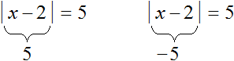
Значит нужно выяснить при каких значениях переменной x подмодульное выражение x − 2 будет обращаться в число 5 или −5.
Искомые значения x найдутся если приравнять подмодульное выражение к числу 5 и −5, а затем поочерёдно решить каждое из уравнений:
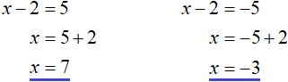
Значит корнями уравнения |x − 2| = 5 являются числа 7 и −3.
Большинство элементарных уравнений с модулем можно решить используя правило раскрытия модуля. Для этого раскрывают модуль содержащийся в уравнении, затем получившееся выражение подставляют в исходное уравнение вместо выражения с модулем.
Раскрывать модуль нужно для каждого из случаев: когда подмодульное выражение больше или равно нулю, и когда подмодульное выражение меньше нуля.
Решим наше уравнение |x − 2| = 5 с помощью правила раскрытия модуля. Выпишем отдельно его модуль и раскроем его:
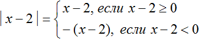
В этой конструкции говорится, что если подмодульное выражение x − 2 больше или равно нулю, то модуль раскроется как x − 2, и тогда исходное уравнение примет вид x − 2 = 5, откуда x = 7
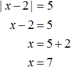
А если же подмодульное выражение x − 2 меньше нуля, то модуль раскроется как −(x − 2). Тогда исходное уравнение примет вид −(x − 2) = 5, откуда x = −3
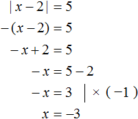
Итак, уравнение |x − 2|= 5 имеет корни 7 и −3. Для проверки подстáвим числа 7 и −3 в исходное уравнение вместо x. Тогда получим верное равенство:
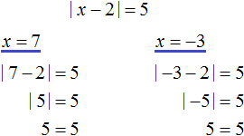
Подмодульное выражение как правило содержит такое x, которое может обращать всё подмодульное выражение как в положительное число, так и в отрицательное, либо вообще в ноль.
Поэтому модуль и раскрывается для каждого из случаев: когда подмодульное выражение больше или равно нулю, и когда подмодульное выражение меньше нуля. Каждый из случаев будет давать независимое уравнение со своим корнем.
Вернёмся теперь к моменту, где мы раскрывали модуль:
Условия x − 2 ≥ 0 и x − 2 < 0 являются неравенствами, которые можно решить, тем самым приведя их к простому виду:
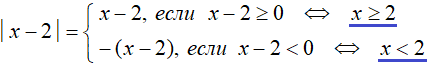
Символ ⇔ означает равносильность. В данном случае указывается, что условие x − 2 ≥ 0 равносильно условию x ≥ 2, а условие x − 2 < 0 равносильно условию x < 2.
Такой вид записи условий позволяет однозначно сказать при каких x модуль будет раскрываться с плюсом, а при каких с минусом.
В первом случае получилось условие x ≥ 2. Это значит что при всех x бóльших либо равных 2, модуль |x − 2| будет раскрываться с плюсом. Так, при x = 7, подмодульное выражение станет равно 5
|7 − 2| = |5|
А значит дальнейшее раскрытие будет с плюсом
|7 − 2| = |5| = 5
Таким же образом модуль |x − 2| будет вести себя и с другими значениями x на промежутке x ≥ 2. То есть, будет раскрываться с плюсом. Примеры:
При x = 3, |3 − 2|=|1| = 1
При x = 4, |4 − 2|=|2| = 2
При x = 2, |2 − 2|=|0| = 0
При x = 13, |13 − 2|=|11| = 11
А во втором случае получилось условие x < 2. Это значит что при всех x мéньших 2, модуль будет раскрываться с минусом. Так, при x = −3, подмодульное выражение опять же станет равно 5. Но в промежуточных вычислениях можно увидеть, что модуль раскрывается с минусом:
|−3 − 2| = |−5| = −(−5) = 5
Модуль |x − 2| будет вести себя так же и с другими значениями x на промежутке x < 2. Примеры:
При x = 1, |1 − 2|=|−1| = −(−1) = 1
При x = 0, |0 − 2|=|−2| = −(−2) = 2
При x = −1, |−1 − 2|=|−3| = −(−3) = 3
При x = −9,|−9 − 2|=|−11| = −(−11) = 11
Число 2 является своего рода точкой перехода, в которой модуль |x − 2| меняет свой порядок раскрытия.
Можно представить как модуль |x − 2| двигался по маршруту от минус бесконечности до числа 2, раскрываясь в каждой точке с минусом. Попав в точку 2, модуль поменял свой порядок раскрытия — а именно раскрывшись в точке 2 с плюсом, он далее стал раскрываться с плюсом, двигаясь в правую часть к плюс бесконечности.
С помощью координатной прямой это можно представить так:
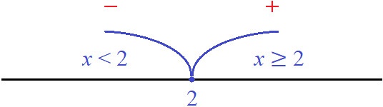
Красные знаки минуса и плюса указывают, как будет раскрываться модуль |x − 2| на промежутках x < 2 и x ≥ 2.
Точку перехода можно найти для любого модуля. Для этого нужно узнать при каких x подмодульное выражение равно нулю. Ноль это то значение, до и после которого модуль всегда сохраняет свой знак. Это следует из правила раскрытия модуля:

В этом примере в момент когда x станет равным нулю, модуль |x| раскроется с плюсом и далее при всех x, бóльших нуля, будет раскрываться с плюсом. Напротив, при всех x, мéньших нуля модуль будет раскрываться с минусом:

А например для модуля |2x + 6| точкой перехода будет число −3, потому что при его подстановке в подмодульное выражение 2x + 6 вместо x, данное подмодульное выражение станет равно нулю. Изобразим это на рисунке:
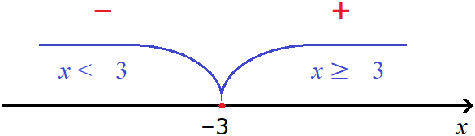
При всех x, бóльших либо равных −3, модуль будет раскрываться с плюсом. Примеры:
При x = −3, |2 × (−3) + 6| = |0| = 0
При x = 4, |2 × 4 + 6| = |14| = 14
При x = 5, |2 × 5 + 6| = |16| = 16
А при всех x, мéньших 3, модуль будет раскрываться с минусом. Примеры:
При x = −4, |2 × (−4) + 6| = |−2| = −(−2) = 2
При x = −5, |2 × (−5) + 6| = |−4| = −(−4) = 4
При x = −6, |2 × (−6) + 6| = |−6| = −(−6) = 6
Пример 2. Решить уравнение |x| + 3x = −2
Решение
Раскроем модуль, который содержится в левой части уравнения:
Если x ≥ 0, то модуль раскроется со знаком плюс и тогда исходное уравнение примет вид x + 3x = −2. Сразу решим это уравнение:
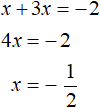
Теперь рассмотрим второй случай — когда x < 0. В этом случае модуль в исходном уравнении раскроется со знаком минус, и тогда получится уравнение −x + 3x = −2. Решим и это уравнение:
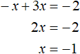
Получили корни \(-\frac{1}{2}\) и −1.
Выполним проверку, подставив найденные корни в исходное уравнение. Проверим корень \(-\frac{1}{2}\)
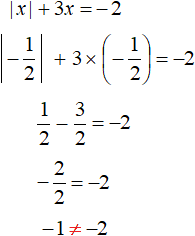
Видим, что при подстановке корня \(-\frac{1}{2}\) исходное уравнение не обращается в верное равенство. Значит \(-\frac{1}{2}\) не является корнем исходного уравнения.
Проверим теперь корень −1
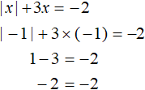
Получили верное равенство. Значит из двух найденных решений только −1 является корнем уравнения.
Ответ: −1.
Здесь можно сделать важный вывод. В уравнениях с модулем найденные корни не всегда удовлетворяют исходному уравнению. Чтобы убедиться в правильности своего решения, нужно выполнять проверку, подставляя найденные корни в исходное уравнение.
Кроме того, проверить является ли найденное значение корнем уравнения можно с помощью условия, согласно которому был раскрыт модуль.
Так, в данном примере мы раскрывали модуль |x| для случаев когда подмодульное выражение больше или равно нулю, и когда подмодульное выражение меньше нуля:
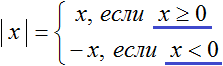
Условия x≥0 и x<0 являются неравенствами. В эти неравенства можно подставлять найденные корни. Если неравенства окажутся верными, значит корни удовлетворяют исходному уравнению.
Так, при раскрытии модуля со знаком плюс, получилось уравнение x + 3x = −2. Корнем этого уравнения стало число \(-\frac{1}{2}\). Это число не удовлетворяет условию x ≥ 0, согласно которому был раскрыт модуль |x| и согласно которому было получено уравнение x + 3x = −2. Действительно, при подстановке числа \(-\frac{1}{2}\) в неравенство x ≥ 0 получается неверное неравенство.
А при раскрытии модуля со знаком минус, получилось уравнение −x + 3x = −2. Корнем этого уравнения стало число −1. Это число удовлетворяет условию x<0, согласно которому был раскрыт модуль |x| и согласно которому было получено уравнение −x + 3x = −2. Действительно, при подстановке числа −1 в неравенство x < 0 получается верное неравенство.
Пример 3. Решить уравнение |1 − 2x| − 4x = −6
Решение
Раскроем модуль:
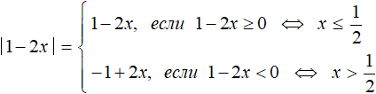
При раскрытии модуля |1 − 2x| со знаком плюс, получим уравнение 1 − 2x − 4x = −6. Решим его:
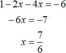
При раскрытии модуля |1 − 2x| со знаком минус, получим уравнение −1 + 2x − 4x = −6. Решим его:
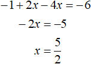
Получили корни \(\frac{7}{6}\) и \(\frac{5}{2}\).
Корень \(\frac{7}{6}\) не удовлетворяет условию
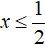
, значит не является корнем исходного уравнения.Корень \(\frac{5}{2}\) удовлетворяет условию
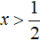
, значит является корнем исходного уравнения. Проверка также покажет это: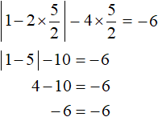
Ответ: \(\frac{5}{2}\).
Пример 4. Решить уравнение |x2 − 3x| = 0
Решение
Если модуль числа равен нулю, то подмодульное выражение тоже равно нулю:
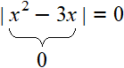
То есть можно не раскрывать модуль. Достаточно узнать при каких значениях x подмодульное выражение равно нулю. В данном случае для этого нужно решить неполное квадратное уравнение:
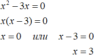
Получили корни 0 и 3. Оба корня удовлетворяют исходному уравнению. Проверка показывает это:
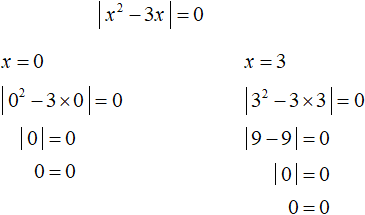
Пример 5. Решить уравнение x2 − 5|x| + 6 = 0
Выпишем отдельно модуль |x| и раскроем его:
При раскрытии модуля |x| со знаком плюс, исходное уравнение примет вид x2 − 5x + 6 = 0. Это квадратное уравнение. Решим его с помощью дискриминанта:
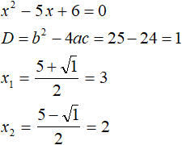
Оба корня удовлетворяют условию x ≥ 0, значит являются корнями исходного уравнения.
При раскрытии модуля |x| со знаком минус, исходное уравнение примет вид x2 + 5x + 6 = 0. Это тоже квадратное уравнение. Решим его как и предыдущее:
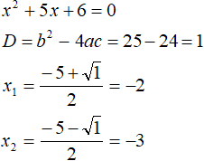
При условии x ≥ 0, модуль из уравнения раскрылся с плюсом, получились корни 3 и 2. Оба корня удовлетворяют условию x ≥ 0, значит удовлетворяют и исходному уравнению.
При условии x < 0, модуль из уравнения раскрылся с минусом, получились корни −2 и −3. Оба корня удовлетворяют условию x < 0, значит удовлетворяют и исходному уравнению.
Ответ: 3, 2, −2 и −3.
Сведéние уравнения с модулем в совокупность
Большинство элементарных уравнений с модулем можно решить сведéнием их к так называемой совокупности уравнений.
Элементарными мы будем называть те уравнения с модулем, в которых левая часть является модулем из какого-то выражения, а правая часть — числом. Например, |x| = 3 или |2x − 1| = 3.
Решим наше самое первое уравнение |x − 2| = 5 сведéнием его к совокупности уравнений. Корнями этого уравнения были числа 7 и −3. Это уравнение тоже считается элементарным.
Если раскрыть модуль |x − 2| со знаком плюс, то уравнение |x − 2| = 5 примет вид x − 2 = 5.
Если раскрыть модуль |x − 2| со знаком минус, то уравнение |x − 2| = 5 примет вид −(x − 2) = 5, то есть −x + 2 = 5.
Видим, что из уравнения |x − 2| = 5 получилось два уравнения: x − 2 = 5 и −x + 2 = 5. Причём каждое из уравнений имеет свой собственный корень. Уравнение x − 2 = 5 имеет корень 7, а уравнение −x + 2 = 5 — корень −3
Выпишем уравнения x − 2 = 5 и −x + 2 = 5 и объединим их квадратной скобкой:
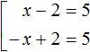
Такой вид записи называют совокупностью уравнений.
Совокупность уравнений — это несколько уравнений, объединённых квадратной скобкой, и имеющих множество решений, которые удовлетворяют хотя бы одному из уравнений, входящих в данную совокупность.
Так, число 7 является решением совокупности потому что это число удовлетворяет первому уравнению х − 2 = 5.
Число −3 тоже является решением данной совокупности, поскольку удовлетворяет второму уравнению −х + 2 = 5.
Вместе же числа 7 и −3 образуют множество решений данной совокупности.
В отличие от системы уравнений, совокупность состоит из уравнений, которые не зависят друг от друга. Для каждого уравнения, входящего в совокупность, значение переменной x будет разным. А в системе уравнений значение переменной x удовлетворяет как первому уравнению, так и второму.
Решить совокупность уравнений означает найти множество решений, которые удовлетворяют хотя бы одному из уравнений, входящих в данную совокупность.
Решим каждое уравнение совокупности по-отдельности. Это обычные линейные уравнения, которые легко решаются:
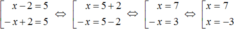
Символ ⇔ как было ранее сказано означает равносильность. В данном случае он указывает на то, что все получающиеся совокупности равносильны друг другу.
Итак, мы получили корни 7 и −3. Поскольку эти два числа являются решениями совокупности , то значит являются и решениями уравнения |x − 2| = 5.
В исходную совокупность можно включать условия, согласно которым был раскрыт модуль. В этом случае каждое уравнение вместе со своим условием обрамляется знаком системы.
Дополним предыдущую совокупность условиями, согласно которым был раскрыт модуль. К первому уравнению x − 2 = 5 добавим условие x − 2 ≥ 0, а ко второму уравнению −x + 2 = 5 добавим условие x − 2 < 0
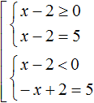
Решение каждого уравнения должно удовлетворять своему условию. Поэтому условия и уравнения обрамлены знáком системы.
Решим получившуюся совокупность с условиями. Условия являются неравенствами, которые тоже можно решать:
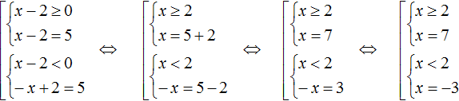
В первом случае получили корень 7, который удовлетворяет своему условию x ≥ 2. Во втором случае получили корень −3, который удовлетворяет своему условию x < 2.
Не следует бояться таких записей. Это лишь подробное решение, показывающее что откуда взялось. Чаще всего решение можно записать покороче.
Существует схема для сведéния в совокупность уравнения вида |x| = a. Выглядит эта схема так:
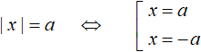
Данная схема легко позволяет свести уравнение с модулем в совокупность. Эту схему можно прочитать так: «Если выражение |x| равно a, то подмодульное выражение равно a или −a»
Квадратная скобка в совокупностях заменяет собой слово «или».
Например, уравнение |x| = 5 можно свести в совокупность, рассуждая так: если выражение |x| равно 5, то подмодульное выражение равно 5 или −5.
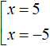
А применительно к нашему предыдущему примеру можно рассуждать так: если |x − 2| равно 5, то подмодульное выражение равно 5 или −5
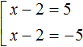
Это та же самая совокупность, что и в прошлый раз. Убедитесь в этом, умножив обе части второго уравнения на −1.
В уравнениях где слева модуль, а справа число, мы будем чаще использовать именно такой способ записи совокупности. Он позволяет не прибегать к правилу раскрытия модуля, а сразу получить совокупность.
Но надо помнить, что эта схема будет работать только для уравнений вида |x| = a. То есть для уравнений, у которого слева модуль, а справа число.
Пример 2. Решить уравнение |2x − 1| = 3
Решение
У этого уравнения слева модуль, а справа число. Значит его можно свести в совокупность, воспользовавшись схемой
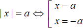
Если выражение |2x − 1| равно 3, то подмодульное выражение 2x − 1 равно 3 или −3
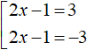
Теперь решим каждое уравнение совокупности по отдельности:
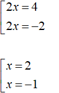
Ответ: 2 и −1.
Пример 3. Решить уравнение |x + 2| − 3 = 8
Решение
В некоторых случаях прежде чем свести исходное уравнение в совокупность, его следует упростить.
Так, в данном случае −3 следует перенести в правую часть, изменив знак:
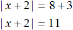
Получили уравнение |x + 2| = 11. Если выражение |x + 2| равно 11, то подмодульное выражение x + 2 равно 11 или −11
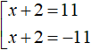
Решим данную совокупность:
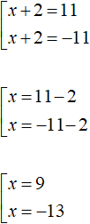
Ответ: 9 и −13.
Пример 4. Решить уравнение 4|x| + 4 = 2|x| + 10
Решение
Перенесём 2|x| из правой части в левую часть, а 4 перенесём из левой части в правую часть:
4|x| − 2|x| = 10 − 4
2|x| = 6
Разделим обе части получившегося уравнения на 2. Тогда получится простое уравнение с модулем:
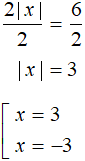
Ответ: 3 и −3.
Пример 5. Решить уравнение
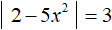
Решение
Если выражение |2 − 5x2| равно 3, то подмодульное выражение 2 − 5x2 равно 3 или −3
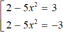
В обоих уравнениях перенесём 2 в правую часть, изменив знак:
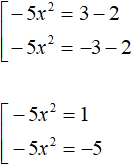
В первом уравнении разделим обе части на −5. Во втором уравнении так же разделим обе части на −5. Тогда получим два квадратных уравнения
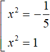
Первое уравнение не имеет корней, потому что квадрат любого числа положителен, а в данном случае он равен отрицательному числу. Корнями второго уравнения являются числа 1 и −1, поскольку вторая степень этих чисел равна единице.
Ответ: 1 и −1.
Пример 6. Решить уравнение |x + 6| + 4x = 5
Решение
Данное уравнение не является уравнением вида |x| = a, значит не получится воспользоваться схемой .
Чтобы свести данное уравнение в совокупность, нужно сначала раскрыть его модуль, затем записать совокупность из получившихся уравнения.
Раскроем модуль |x + 6|
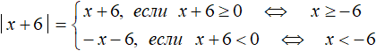
Если x + 6 ≥ 0 , то модуль раскроется со знаком плюс и тогда исходное уравнение примет вид x + 6 + 4x = 5
Если x + 6 < 0, то модуль раскроется со знаком минус и тогда исходное уравнение примет вид −x − 6 + 4x = 5. Получим следующую совокупность:
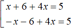
Дальнейшее решение элементарно:
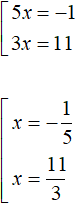
Из найденных корней только
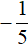
является корнем исходного уравнения, поскольку удовлетворяет условию x ≥ −6. А корень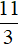
не является корнем уравнения, поскольку не удовлетворяет условию x < −6.Ответ:
Наиболее простой вид
Наиболее простой вид уравнения с модулем выглядит так:
| x | = a
где x — корень уравнения, a — произвольное число, бóльшее или рáвное нулю. То есть a ≥ 0
Если условие a ≥ 0 не выполнено, то уравнение |x|= a корней не имеет. Это следует из определения модуля. Действительно, модуль всегда неотрицателен.
Приведем несколько примеров уравнений вида |x| = a
Пример 1. Решить уравнение |x| = 2
Решение
В данном случае сразу видно, что корнями являются числа 2 и −2. Ведь если вместо x подставить эти числа, то получим верное равенство: |−2| = 2 и |2| = 2. Решение для этого уравнения можно записать, сведя его в совокупность:
«Если выражение |x| равно 2, то подмодульное выражение x равно 2 или −2«
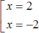
Ответ: 2 и −2
Пример 2. Решить уравнение |−x| = 4
Решение
Если выражение |−x| равно 4, то подмодульное выражение равно 4 или −4
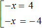
Умножим оба уравнения на −1
Ответ: −4 и 4.
Пример 3. Решить уравнение |x| = −7
В данном случае корней нет, поскольку модуль всегда неотрицателен. А в данном случае модуль равен отрицательному числу.
Если уравнение с модулем не имеет корней, обычно пишут что x принадлежит пустому множеству:
x ∈ ø
Напомним, что пустым называют множество, не имеющее элементов.
Модуль внутри модуля
Рассмотрим уравнение:
В этом уравнении слева располагается модуль, который в свою очередь содержит внутри себя другой модуль, а справа уравнения располагается число. Такой вид уравнения с модулем можно решить, сведя его в совокупность с помощью схемы, которую мы рассмотрели ранее:
В нашем случае если выражение равно 9, то подмодульное выражение |2 + x| + 3 равно 9 или −9
В получившейся совокупности имеется два уравнения с модулем. Эти уравнения тоже в свою очередь следует свести в совокупность. Но сначала немного упростим эти уравнения. В первом и во втором уравнении перенесем 3 в правую часть, изменив знак. Тогда получим:
Теперь сведём эти уравнения в совокупности. Первое уравнение распадётся на следующую совокупность:
Сразу решим совокупность . Первый корень равен 4, второй −8.
Теперь решим второе уравнение |2 + x| = −12. Но замечаем, что его правая часть равна отрицательному числу. Это уравнение не имеет корней, потому что модуль не может равняться отрицательному числу.
Значит уравнение имеет корни 4 и −8. Проверим эти корни, подставив их в исходное уравнение
В данном случае оба корня удовлетворяют исходному уравнению.
Ответ: 4 и −8.
Вообще, уравнение с модулем внутри которого содержится другой модуль, тоже решается различными способами. Какой способ использовать зависит от самогó уравнения. Решим например следующее уравнение:
Здесь уже нельзя использовать схему потому что слева располагается не только модуль, но и переменная x. Конечно, переменную x можно перенести в правую часть, и тогда можно будет свести данное уравнение в совокупность:
Но тогда справа появляется переменная x, на которую нужно будет вводить дополнительное ограничение, чтобы правая часть уравнения не стала отрицательной. Такой способ решения мы рассмотрим позже. А пока решим исходное уравнение с помощью правила раскрытия модуля.
Чтобы раскрыть модули данного уравнения нужно сначала определиться где внешний и где внутренний модуль.
В уравнении внешним модулем является полностью левая часть , а внутренним модулем — выражение
Значение внешнего модуля зависит от внутреннего модуля, и раскрываться внешний модуль будет исходя от результата который получился в результате вычисления его подмодульного содержимого.
Например, если x = 3, то внутренний модуль |3 − x| примет значение 0, и в результате всё подмодульное выражение внешнего модуля станет равно −2. А это значит что внешний модуль будет раскрываться с минусом.
||3 − x| − x + 1| = ||3 − 3| − 3 + 1| = ||0| − 3 + 1| = |−2| = −(−2) = 2
А если например x = −2, то внутренний модуль |3 − x| примет значение 5, и в результате всё подмодульное выражение внешнего модуля станет равно 8. А это значит что внешний модуль будет раскрываться с плюсом:
||3 − x| − x + 1| = ||3 − (−2)| − (−2) + 1| = ||5| − (−2) + 1| = | 8 |=8
Поэтому решение будем начинать с раскрытия внутреннего модуля.
Если внутренний модуль раскроется с плюсом, то есть если 3 − x ≥ 0 (что равносильно неравенству x ≤ 3), то исходное уравнение примет вид:
Теперь уравнение имеет только внешний модуль. Решим его раскрыв модуль:
Если −2x + 4 ≥ 0, то:
Сейчас нас интересуют только те значения x при которых внутренний модуль раскрывается с плюсом, а это произойдет при условии x ≤ 3. Поэтому для наглядности рядом с найденным корнем указано, что он удовлетворяет условию x ≤ 3
Решаем далее. Если −2x + 4 < 0, то:
Несмотря на то, что оба найденных корня удовлетворяют уравнению |−2x+4|=6−x, мы исключаем корень из решений, потому что нас сейчас интересуют только те значения x, при которых внутренний модуль изначального уравнения раскрывается с плюсом. Поэтому рядом с корнем указано, что он не удовлетворяет условию x ≤ 3.
Итак, если внутренний модуль раскрывается с плюсом, исходное уравнение принимает вид |−2x + 4| = 6 − x и корнем этого уравнения является число −2.
Теперь решим исходное уравнение для случая, когда внутренний модуль раскрывается с минусом, то есть когда 3 − x < 0 (что равносильно неравенству x > 3). Внутренний модуль будет раскрываться с минусом при всех значениях x больших 3.
Если внутренний модуль раскроется с минусом, то исходное уравнение примет вид:
Модуль −2 равен 2. Тогда получаем простейшее линейное уравнение, корень которого равен 4
Получили корень 4, который удовлетворяет условию x > 3.
В итоге корнями уравнения являются числа −2 и 4.
Ответ: 2 и 4.
Пример 3. Решить уравнение ||x − 1| − 7| = 10
Решение
Слева располагается модуль, а справа число, значит можно применить схему:
В данном случае если выражение ||x − 1| − 7| равно 10, то подмодульное выражение |x − 1| − 7 равно 10 или −10. Получится совокупность из двух уравнений:
Упростим получившиеся уравнения. Перенесём число −7 в обоих уравнениях в правую часть, изменив знак:
Второе уравнение корней не имеет. Первое уравнение распадется на совокупность , корни которой 18 и −16.
Ответ: 18 и −16.
Решим это же уравнение с помощью раскрытия модулей. Начнем с внутреннего модуля.
Если x − 1 ≥ 0 (что равносильно x ≥ 1), то исходное уравнение примет вид:
Решим получившееся уравнение раскрыв модуль:
Далее решаем уравнение для случаев когда x − 8 ≥ 0 и x − 8 < 0
Сейчас нас интересуют те значения, при которых внутренний модуль исходного уравнения раскрывается с плюсом. А это будет при условии, что x ≥ 1. Этому условию удовлетворяет только значение 18, поэтому мы пометили его зеленой галочкой для наглядности.
Теперь решим исходное уравнение для случая, когда внутренний модуль раскрывается с минусом, то есть когда x − 1 < 0 (или что равносильно неравенству x < 1).
Если x − 1 < 0, то исходное уравнение примет вид:
Решим получившееся уравнение раскрыв модуль:
Далее решаем уравнение для случаев когда −x − 6 ≥ 0 и −x − 6 < 0
Из найденных корней только −16 удовлетворяет условию x < 1.
В итоге корнями уравнения ||x − 1| − 7| = 10 являются числа 18 и −16.
Видно, что с помощью схемы данное уравнение решилось легче и быстрее, чем способом раскрытия модулей.
Слева модуль, а справа выражение с переменной
Решим следующее уравнение с модулем:
|4x − 3| = 3x
Здесь так же применима схема:
То есть, если выражение |4x − 3| равно 3x, то подмодульное выражение 4x − 3 должно равняться 3x или −3x.
Но в исходном уравнении переменная x содержится не только под знáком модуля, но и в правой части. Нам пока неизвестно какое значение примет переменная x. Если x примет отрицательное значение, то правая часть станет полностью отрицательной. В этом случае корней не будет, потому что модуль не может равняться отрицательному числу.
Поэтому, если мы хотим решить данное уравнение, то при сведéнии его в совокупность, дополнительно следует ввести ограничение в виде условия 3x ≥ 0. Это будет означать, что правая часть уравнения |4x − 3| = 3x должна быть больше либо равна нулю:
Совокупность и условие обрамлены знаком системы, потому что решения совокупности должны удовлетворять условию 3x ≥ 0.
Итак, решим совокупность. Условие 3x ≥ 0 является неравенством, которое тоже можно решить:
Получившиеся корни можно подставить в условие x ≥ 0 и посмотреть выполняется ли оно. Если выполняется, то найденные корни удовлетворяют уравнению. В данном случае при подстановке обеих корней в неравенство, оно выполняется. Проверка также показывает, что корни удовлетворяют уравнению:
Пример 2. Решить уравнение |2x − 1| = 5x − 10
Решение
Решим это уравнение таким же образом, как и предыдущее. Введём условие, требующее чтобы правая часть была больше либо равна нулю:
В данном случае только значение 3 удовлетворяет условию x ≥ 2. Оно же является единственным корнем исходного уравнения. Проверка показывает это:
А число не удовлетворяет условию x ≥ 2 и не является корнем исходного уравнения. Проверка также показывает это:
Видим, что модуль стал равен отрицательному числу, а это противоречит определению модуля и нашему условию x ≥ 2.
Пример 3. Решить уравнение
Решение
Это уравнение мы решили, когда учились решать уравнения с модулем внутри которых другой модуль. Теперь данное уравнение можно решить, сведя его в совокупность.
Для начала перенесём x в правую часть, изменив знак:
Теперь сведём данное уравнение в совокупность. Дополнительно введём условие в виде неравенства 6 − x ≥ 0
В левой части первого уравнения оставим модуль, остальные члены перенесём в правую часть. Тоже самое сделаем и со вторым уравнением. Также будем решать неравенство 6 − x ≥ 0, оно позволит в конце проверять найденные корни на соответствие:
Решим первое уравнение. Оно распадётся на следующую совокупность:
Получились корни −2 и 8. Из них только −2 удовлетворяет условию x ≤ 6.
Теперь решим второе уравнение. Оно является уравнением, содержащим переменную в правой части. При сведении его в совокупность дополним его условием −7 + 2x ≥ 0
Дальнейшее элементарно:
При решении второго уравнения получились корни и 4. Прежде чем сверять их с условием x ≤ 6 следует сверить их с условием под которое решалось уравнение |3 − x| = −7 + 2x. Условию удовлетворяет только корень 4.
В итоге корнями исходного уравнения являются числа −2 и 4.
Пример 4. Решить уравнение |4x + 20| = −6x
Решение
На первый взгляд покажется, что данное уравнение не имеет решений, потому что правая часть отрицательна. Но это не совсем так. Правая часть содержит переменную x, которая может принять отрицательное значение или ноль, и это приведёт к тому что правая часть станет положительной либо равной нулю. А такое уравнение имеет право на существование.
В данном случае мы решим это уравнение, сведя его в совокупность. Но при этом укажем, что правая часть должна быть больше или равна нулю:
Из найденных корней только корень −2 удовлетворяет исходному уравнению. Также он удовлетворяет нашему условию x ≤ 0.
Ответ: −2.
Когда обе части — модули
Решим следующее уравнение:
|x + 7| = |1 + 3x|
Обе части этого уравнения являются модулями. Раскроем эти модули. Будем учитывать все возможные случаи при их раскрытии.
Случай 1. Если x + 7 ≥ 0 и 1 + 3x ≥ 0, то модули в обеих частях раскроются со знаком плюс и тогда исходное уравнение примет вид:
\[x + 7 = 1 + 3x\]
Это простейшее линейное уравнение. Решим его:
Случай 2. Если x + 7 < 0 и 1 + 3x < 0, то модули в обеих частях раскроются со знаком минус и тогда исходное уравнение примет вид:
\[-(x + 7) = -(1 + 3x)\]
Раскроем скобки, получим:
\[-x - 7 = -1 - 3x\]
Замечаем, что если умножить обе части этого уравнения на −1, то получается уравнение x + 7 = 1 + 3x. А это уравнение мы получали в результате раскрытия модулей со знаком плюс.
То есть уравнения x + 7 = 1 + 3x и −x − 7 = −1 − 3x являются равносильными, а значит имеют одни и те же корни. Убедимся в этом, решив уравнение −x − 7 = −1 − 3x
Поэтому, раскрыв модули со знаком плюс, нет необходимости раскрывать их со знаком минус, потому что в обоих случаях получаются уравнения, имеющие одни и те же корни.
Следующий случай это когда x + 7 ≥ 0 и 1 + 3x < 0. Тогда исходное уравнение примет вид x + 7 = −1 − 3x. Найдём корень этого уравнения:
И последний случай это когда x + 7 < 0 и 1 + 3x ≥ 0. Тогда уравнение примет вид −x − 7 = 1 + 3x. Если умножить это уравнение на −1, то получим уравнение x + 7 = −1 − 3x. А это уравнение мы получали, когда рассматривали предыдущий случай (случай x + 7 ≥ 0 и 1 + 3x < 0).
Следовательно, уравнение −x − 7 = 1 + 3x равносильно предыдущему уравнению x + 7 = −1 − 3x. Убедимся в этом решив уравнение −x − 7 = 1 + 3x
Значит раскрыв левую часть со знаком плюс, а правую часть со знаком минус, нет необходимости раскрывать левую часть со знаком минус, а правую часть со знаком плюс, потому что в обоих случаях получаются уравнения, имеющие одни и те же корни.
Вообще, если в уравнении обе части являются модулями как в данном примере, то это уравнение можно свести в следующую совокупность:
В этой конструкции уравнение вида |a| = |b| сведено в совокупность из двух уравнений a = b и a = −b. Видно что первое уравнение получается путем раскрытия обоих модулей со знаком плюс, а второе уравнение — путем раскрытия модуля |a| со знаком плюс, а модуля|b|— со знаком минус.
Важно. Данная схема работает только тогда, когда обе части являются модулями без посторонних членов. Проще говоря, если будет дано уравнение, например |a| = |b| + c, то приведенную схему использовать нельзя.
Пример 2. Решить уравнение |2 − 3x| = |x + 5|
Решение
Обе части данного уравнения являются модулями. Воспользуемся схемой:
У нас получится совокупность из двух уравнений. В первом уравнении оба модуля будут раскрыты со знаком плюс, во втором уравнении — модуль |2 − 3x| будет раскрыт со знаком плюс, а модуль |x + 5| со знаком минус:
Выполним проверку:
Ответ: \(-\frac{3}{4}\) и \(\frac{7}{2}\)
Пример 3. Решить уравнение |x2 − 13x + 35|=|35 − x2|
Решение
Обе части данного уравнения являются модулями. Воспользуемся схемой:
У нас получится совокупность из двух уравнений. В первом уравнении оба модуля будут раскрыты со знаком плюс. Во втором уравнении — модуль |x2 − 13x + 35| будет раскрыт со знаком плюс, а модуль |35 − x2| со знаком минус:
Приведём подобные члены в обоих уравнениях:
Первое уравнение является неполным квадратным. Решим его, вынеся x за скобки. Второе уравнение решается элементарно:
Ответ: , , 0.
Когда решение — числовой промежуток
Нередко приходиться решать уравнения с модулем, где корнями являются не один или два числа, а числовой промежуток. Таковым, например, является уравнение:
|5x + 3| = −5x − 3
Раскроем модуль этого уравнения:
Если раскрыть модуль со знаком плюс, то получается уравнение 5x + 3 = −5x − 3. Решим его:
А если раскрыть модуль со знаком минус, то получится уравнение −5x − 3 = −5x − 3. В этом уравнении обе части являются одинаковыми, а значит данное равенство является тождеством. Оно будет верно при любом значении x. Значит корнями уравнения −5x − 3 = −5x − 3 являются все числа от минус бесконечности до плюс бесконечности:
x ∈ (−∞; +∞)
Но надо помнить про условия, согласно которым были раскрыты модули. В первом случае мы получили корень \(-\frac{3}{5}\). Он будет верен только при условии что . Это условие соблюдено. Проверка также показывает что корень подходит:
Значит один из корней уравнений равен \(-\frac{3}{5}\)
Во втором случае мы получили множество корней от минус бесконечности до плюс бесконечности. Но это будет верно только при условии что
Например, если взять любое число из промежутка (−∞; +∞), но которое не будет удовлетворять условию , то это число не будет обращать наше уравнение в верное равенство.
Например, число 2 принадлежит промежутку (−∞; +∞), но не удовлетворяет условию , а значит число 2 не является корнем исходного уравнения. Проверка также покажет это:
А если взять к примеру число −5, то оно будет принадлежать промежутку (−∞; +∞) и удовлетворять условию , а значит будет обращать исходное уравнение в верное равенство:
Поэтому ответ надо записать так, чтобы были выполнены оба условия и . Для наглядности нарисуем координатную прямую и обозначим её как x
 Отметим на ней наш первый корень \(-\frac{3}{5}\)
Отметим на ней наш первый корень \(-\frac{3}{5}\)
Раскрыв модуль со знаком минус и решив получившееся уравнение, мы получили в ответе множество всех чисел от минус бесконечности до плюс бесконечности, но при этом было дано условие . Значит более точным ответ в этом случае будет таким:
Корнями уравнения −5x − 3 = −5x − 3 при условии являются все числа от минус бесконечности до \(-\frac{3}{5}\)
Значит на координатной прямой нужно заштриховать область слева от числа \(-\frac{3}{5}\). Они будут иллюстрировать числа, меньшие \(-\frac{3}{5}\)
Число \(-\frac{3}{5}\) тоже является верным корнем исходного уравнения. Он был получен при раскрытии модуля со знаком плюс. Поэтому на координатной прямой пустой кружок нужно закрасить. Так мы включим число \(-\frac{3}{5}\) во множество решений:
Тогда окончательный ответ будет выглядеть так:
Ответ:
Также, можно решить это уравнение сведя его в совокупность, дополнительно указав, что правая часть должна быть больше либо равна нулю:
Пример 2. Решить уравнение |2x − 3| = 3 − 2x
Решение
Решим исходное уравнение для случаев когда 2x − 3 ≥ 0 и 2x − 3 < 0
Ответ:
Использование координатной прямой
Рассмотрим ещё один способ решения элементарных уравнений с модулем — с помощью координатной прямой. Этот способ используется редко, но знать о нём не помешает.
Решим наше самое первое уравнение |x − 2| = 5 с помощью координатной прямой. Напомним, что корнями этого уравнения были числа 7 и −3.
Модуль есть расстояние от начала координат до точки A. Либо расстояние между двумя числами на координатной прямой.
Расстояние между двумя числами выражается в виде разности |x1 − x2|, где x1 — первое число, x2 — второе число.
Если внимательно посмотреть на уравнение |x − 2|= 5, то можно увидеть что его левая часть это расстояние от x до 2 (или от 2 до x) и это расстояние равно 5. Отмéтим на координатной прямой число x и число 2
Правая часть уравнения |x − 2|= 5 говорит о том, что расстояние от x до 2 составляет пять единиц:
Если расстояние от x до 2 равно 5, то и расстояние от 2 до x тоже равно 5. Это позволяет отсчитать пять целых шагов от числа 2 к числу x и таким образом узнать значение x
Видно, что отсчитав пять шагов влево мы попали в точку с координатой −3. А это один из корней, который мы находили для уравнения |x − 2|= 5.
Но пять целых шагов от числа 2 можно отсчитать не только влево, но и вправо:
Если отсчитать пять целых шагов вправо, то попадём в точку с координатой 7. Это тоже был корень уравнения |x − 2|= 5
Несколько модулей в одной части
Решим следующее уравнение:
|x − 5| − |x| = 1
Это уравнение содержит два модуля в левой части. Чтобы решить данное уравнение нужно раскрыть его модули. Рассмотреть нужно каждый из случаев:
- когда оба модуля больше либо равны нулю;
- когда оба модуля меньше нуля;
- когда первый модуль больше либо равен нулю, а второй модуль меньше нуля;
- когда первый модуль меньше нуля, а второй модуль больше либо равен нулю.
Не будем комментировать каждый случай, а сразу приведём решение:

Первые два случая корней не дали. В третьем случае нашелся корень 3, но он не удовлетворяет условиям x − 5 ≥ 0 и x < 0, поэтому не является корнем исходного уравнения.
В четвёртом случае нашёлся корень 2, который удовлетворяет условиям x − 5 < 0 и x ≥ 0. Также он удовлетворяет исходному уравнению.
Заметно, что такой способ решения уравнения неудобен. Если модулей в уравнении будет три, четыре или более, то придётся рассматривать намного больше случаев. Человек запутавшись, может забыть рассмотреть какой-то из случаев, и получится что уравнение решено не полностью.
Поэтому такой вид уравнения как в данном примере удобнее решать методом интервалов. Об этом мы поговорим в следующем уроке.
Задания для самостоятельного решения
Показать решение
Показать решение
Показать решение
Показать решение
Показать решение
Показать решение
 .
.Показать решение
Показать решение
Показать решение
.Показать решение
Показать решение
Показать решение